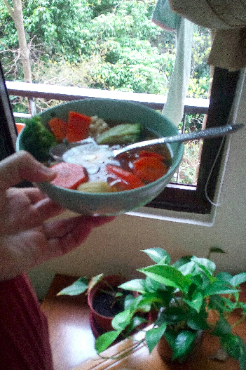
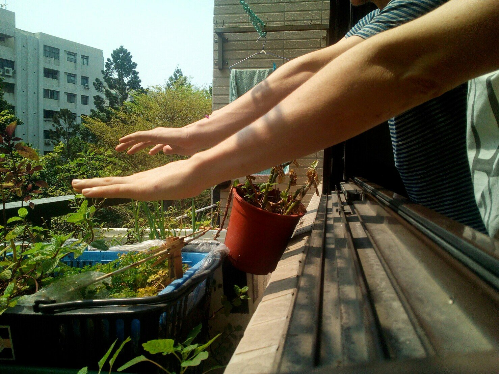
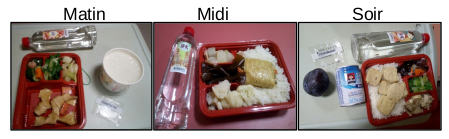
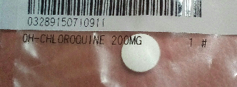
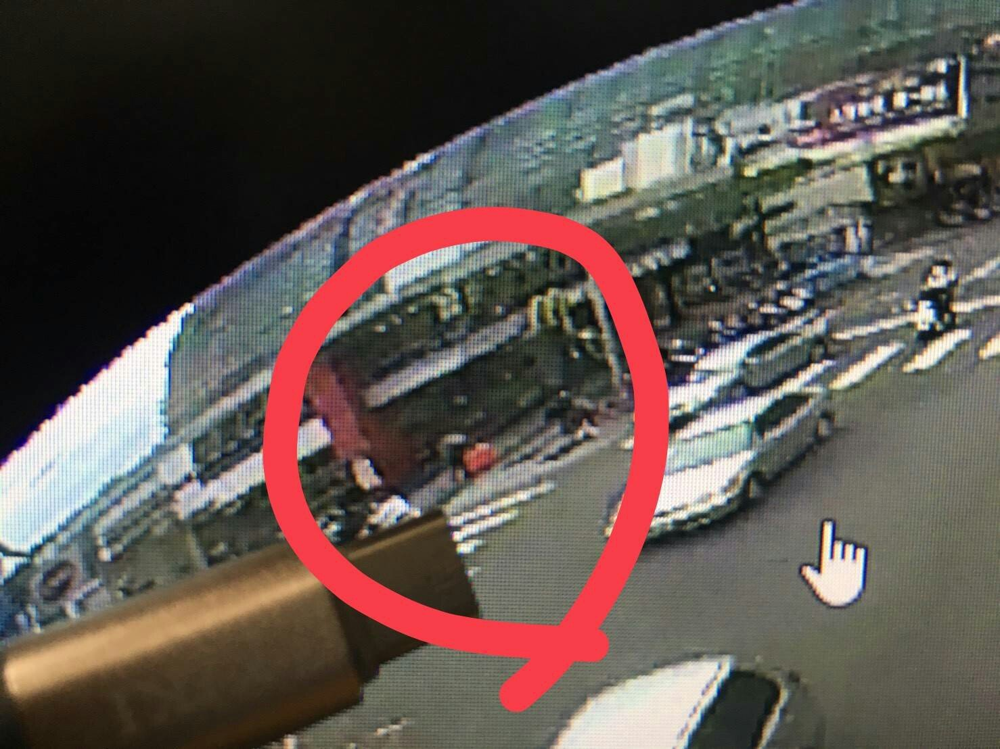
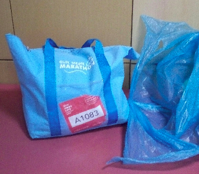
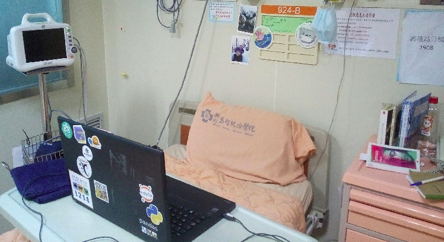
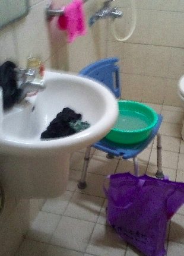

Ce soir, je pars de Hsinchu pour me rendre dans notre nouvel appartement à Taipei. On déménage pour la capitale dans une grande colocation. Je prends le bus avec une énorme valise pleine de bric-à-brac. Je travaille encore à l’université de Hsinchu jusqu’à mi-Avril mais mon amie vit déjà à Taipei. Je fais donc des allers-retours Hsinchu-Taipei de temps en temps, afin d’alléger le jour du déménagement officiel à la fin du mois et de retrouver mon amie. La valise en soute, je monte dans le bus, c’est parti pour une heure et demie de trajet. Je regarde le paysage qui défile et prévois ma soirée. Une fois à Taipei, il me faudra encore 30 minutes pour enfin arriver à la colocation. Ensuite, mon amie me rejoindra en sortant de son travail. On n’a rien prévu pour l’instant. Nous mangerons certainement dehors puis on se fera probablement une soirée film.
Taipei station principale, c’est mon arrêt, je me prépare à descendre. La petite LED de mon téléphone clignote, j’ai un message sur Signal. Je le lis rapidement et je bloque: un ami de nos colocataires qui séjourne actuellement dans l’appartement vient d’être dépisté positif au virus, l’ambulance est sur la route. J’ai passé le week-end dernier dans la colocation, ce qui fait de moi une personne à risque.
Toutes les personnes avec qui j’ai récemment passé du temps traversent mon esprit. Leur ai-je transmis le virus ? Là, maintenant, je suis potentiellement un danger pour les autres, qu’est-ce que je fais ? Je commence par descendre du bus, sors ma valise de la soute et m’isole dans un coin. J’appelle mon amie. On hésite sur la marche à suivre. Elle est à son travail, on l’invite à se rendre à l’hôpital le plus proche. Bonne idée, je décide de faire la même chose. Et me voilà trimballant la valise en marchant le plus éloigné possible des passants. Presque arrivé à l’hôpital, mon amie me rappelle. Ils ne font pas de test tant qu’il n’y a pas de symptômes pour éviter les faux négatifs. Ils l’invitent donc à attendre chez elle. Je reste planté là. Qu’est-ce qu’on fait ? On prend le bus et on rentre à Hsinchu ? On prend le métro et on se retrouve à la colocation ? On n’arrive pas à se décider. Bon déjà, j’achète un masque et je me lave les mains toutes les 5 minutes. Mon amie me dit qu’il y a un numéro spécial covid19 à Taïwan, le 1922, pour joindre le CDC (Centres pour le contrôle et la prévention des maladies). Je compose le numéro et attends. Une fois trouvé un interlocuteur pour communiquer en anglais, j’explique ma situation pendant que mon amie fait pareil de son côté. Ils ne savent pas trop où nous envoyer non plus. Au final, ils nous aideront à prendre une décision: ce sera la quarantaine à Hsinchu. Ils me conseillent de faire des courses pour 15 jours avant d’aller m’isoler car je ne pourrais plus sortir de chez moi. Je rentre donc pour Hsinchu. Une fois arrivé à l’appartement, j’enfile un casque et part en scooter acheter ce que je peux de produits qui se conservent. Je rentre ensuite dans l’appartement et attends mon amie. Quand elle arrive enfin, pour éviter les risques, on ne s’embrasse pas et on se tient à l’écart.
Le lendemain, le CDC nous appelle et demande notre identifiant Line (application de type Facebook) pour communiquer plus facilement. Ils nous précisent que le gouvernement va nous faire signer un contrat certifiant que nous resterons chez nous pendant 14 jours sous peine d’amende lourde. Un officier de police et deux agents gouvernementaux arrivent plus tard dans la journée. Emmitouflés dans une combinaison de plastique, ils traquent nos téléphones pour être certains que nous ne sortirons pas de l’appartement et nous en donnent un avec forfait internet pour être certains que l’on puisse communiquer avec le CDC. On signe l’attestation, sortir coûte très cher en effet. Pas besoin de mesure supplémentaire car à Taïwan, il y a des caméras presque partout. Si jamais l’envie nous prenait de sortir sans téléphone, la justice referait surface à un moment ou à un autre. Ils nous ont déposé un sac avec masques, thermomètres, et de quoi manger quelques jours.
Voilà, c’est parti pour 14 jours. L’eau filtrée et le courrier sont au rez-de-chaussée auquel on n’a pas accès. On fera donc bouillir de l’eau et tant pis pour les nouvelles. Dans la foulée du déménagement, j’ai déjà embarqué le sel à Taipei. Au début, les repas sont fades mais on s’y fait.

Et puis, on se fait livrer directement devant la porte les jours où on a envie d’un repas spécial. On se prévoit un planning de quarantaine incluant une heure de sport (Zumba/fitness), des heures de lecture, des heures de travail, des soirées film, des soirées jeux, etc... On ne va pas s’ennuyer.

Tout se passe tranquillement jusqu’au vendredi matin où mon thermomètre indique 37.5 degrés. Il faut ajouter 0.5 à ce type de thermomètre donc c’est bien un début de fièvre. Je le précise au CDC. Dans la journée, une ambulance vient nous chercher et nous amène à l’hôpital. Ils nous font une radio du thorax et tapote le fond de la bouche avec un coton-tige. La radio semble normale pour nous deux donc ils nous renvoient chez nous. Les autres résultats seront disponibles dans deux jours. Ça fait du bien de sortir un peu. La fièvre tombe le lendemain matin. Deux jours plus tard, le CDC nous demande la liste de toutes les personnes avec qui nous avons été en contact pendant les 20 derniers jours. Ils ne disent pas pourquoi, on s’inquiète un peu. Le lendemain, je reçois un coup de téléphone d’un numéro inconnu, c’est l’ambulance, ils m’attendent en bas. En deux temps trois mouvements, je prépare un sac avec quelques caleçons, teeshirts, chaussettes et livres, et je descends masqué après m’être lavé les mains. L’ambulance m’amène à l’hôpital et on me dépose dans une chambre verrouillée. On me dit que je suis suspecté d’être positif, on va me faire un test complet. Le surlendemain, c’est confirmé, je suis le cas 216. J’ai une légère pneumonie et je tousse un peu.
Pneumonie. Virus. Ces mots ont résonné quelques secondes comme de dangereux coups de tonnerre. Le plus difficile a été de partager la nouvelle avec mon entourage. Mais très rapidement, mon optimisme a repris le dessus. Mon âge, les symptômes plutôt légers et le fait d’être pris en charge à Taïwan se faisant rassurant.
Et voilà, je peux commencer ma routine dans cette chambre qui sera la mienne pour au moins une vingtaine de jours. J’ai pris deux livres, pas assez de vêtements et mon portable. Ils me livrent trois repas taïwanais par jour (vegan, équilibrés et plutôt bons).


Je dois prendre ma température et ma tension matin et soir. J’ai une télévision avec quelques programmes en anglais et allemand. Bref, je ne suis pas mal loti. En revanche, ils ne donnent ni savon ni lessive. Je demande au CDC si c’est possible d’organiser le transfert d’un sac de l’appartement à la chambre d’hôpital. Ils s’en occuperont quand ils auront le temps. Il faut dire que c’est la crise à Taïwan. En ce moment, de nombreux cas sont en train d’être dépistés. Il s’agit des voyageurs revenant ou arrivant à Taïwan n’ayant aucun symptôme que le gouvernement a laissé passer avant la mise en place de la quarantaine obligatoire. En attendant ce transfert donc, j’organise mes journées un peu comme à la maison: yoga au réveil puis petit déjeuner. Prise des antibiotiques et changement de cathéter si besoin. Session de sport de 30 à 50 minutes. Douche. Lecture jusqu’à midi. Repas. Sieste. Lecture jusqu’au soir. Repas. TV et portable. Je lis en marchant, ça me fait un autre apport en activité physique. Les deux premiers jours, j’ai littéralement passé mes journées sur le téléphone. Entre le CDC, l’université où je travaille, la police de chaque ville et l’hôpital, je répète tour à tour en détail mon emploi du temps des derniers jours ainsi que l’état actuel de mes symptômes. La police a retrouvé ma trace sur les vidéos de surveillance. Tous connaissent maintenant mes faits et gestes et la liste des personnes avec qui j’ai été en contact.

Après ce flot de communication par téléphone, les appels et les messages cessent enfin. Cerise sur le gâteau : le CDC m’a enfin livré le sac que mon amie avait préparé avec vêtements, savon, livre, PC, lessive et quelques photos.

Chaque jour peut commencer à se ressembler. Lever vers 7h30. yoga 10 minutes. Température et tension. L’infirmière entre et m’injecte 60cc d’antibiotique. Petit déjeuner livré vers 8h. Hydroxychloroquine 200mg. Une heure de lecture ou de travail. 30 minutes de sport. Douche. Deux heures de travail ou lecture en fonction de l’humeur. Repas. Sieste d’une heure. Cinq heures de travail ou lecture. Repas. Hydroxychloroquine 200mg. Température et tension. Et finalement en fin de journée, je me pose sur le lit et je dessine, j’écris, j’écoute un podcast ou je regarde un film.
Je suis filmé 24h/24 et 7j/7 mais ce n’est pas pesant. Je respecte l’emploi du temps que je me suis fixé autant que faire se peut: aucune envie de péter les plombs dans cette univers artificiel. Cette routine me permet de voir les jours défiler sans m'ennuyer. Je vais être testé le lundi et vendredi jusqu’à ce que j’obtienne trois résultats négatifs d’affilée puis le CDC se réunira afin de décider de mon éventuelle sortie. Ces jours-ci, j’avance beaucoup dans mes projets et je fais presque plus de sport qu’en temps normal. Bien sûr, ma motivation est fluctuante et après 15 jours de quarantaine dont neuf isolé à l’hôpital, mon envie de soleil, d’air frais, de café, de courir, de nature et de contacts sociaux commence à se faire sentir mais dans l’ensemble ça va, et je me réjouis d’avance du jour de sortie. Les autres colocataires et mon amie ne sont pas contaminés, Taïwan semble contrôler l’épidémie, j’ai une assurance santé donc tous les frais sont couverts. Bref, tout va bien de mon côté.


Dernières nouvelles :
Jeudi 2 Avril : arrêt des antibiotiques (Azithromycin en intraveineuse) car la radio du thorax est normale. On ne garde que l'Hydroxychloroquine.
Dimanche 5 Avril : premier résultat négatif après 13 jours de traitement (17 jours après les premiers symptômes). Deux autres comme ça et je sors !
Mercredi 8 Avril : les deux derniers tests étaient positifs à nouveau, donc je reste isolé jusqu'à nouvel ordre. On reprend les tests le vendredi et lundi de chaque semaine.
Lundi 13 Avril : toujours positif au Covid-19. Le test nasal peut afficher un résultat positif jusqu'à 80 jours après les premiers symptômes... La bonne nouvelle, c'est que cela ne signifie pas forcement que le virus est encore actif. En gros, je suis en bonne santé mais potentiellement contagieux donc je dois rester enfermé.
Mercredi 15 Avril : tests nasal et de crachat négatifs aujourd'hui, la sortie bientôt ?!
Vendredi 17 Avril : test nasal positif (test crachat négatif). Je reste isolé et on arrête l'Hydroxochloroquine (ça fait 20 jours déjà, ce n'est pas recommandé de poursuivre trop longtemps). On reprend les tests le vendredi et lundi de chaque semaine. Heureusement, l'équipe médical de Taiwan est super cool !
Vendredi 24 Avril : Négatif à nouveau ce matin, on verra bien les deux autres tests… Aujourd'hui, c'est mon 34ème jour isolé dans cette chambre d'hôpital. Je viens de coder un petit jeu vidéo basé sur les photos de mon isolation. Si tu as envie de jouer, essaie de t' échapper de la pièce !
Mardi 28 Avril : 3 tests négatifs d'affilée ! Je sors demain, 7 petits jours de quarantaine à la maison puis... Liberté !
Vidéo et article de mon interview par le Collectif Eco-Solidaire de Taiwan
Plus d'information sur le Covid-19 à Taïwan :
Pandémie Taïwan info du gouvernement